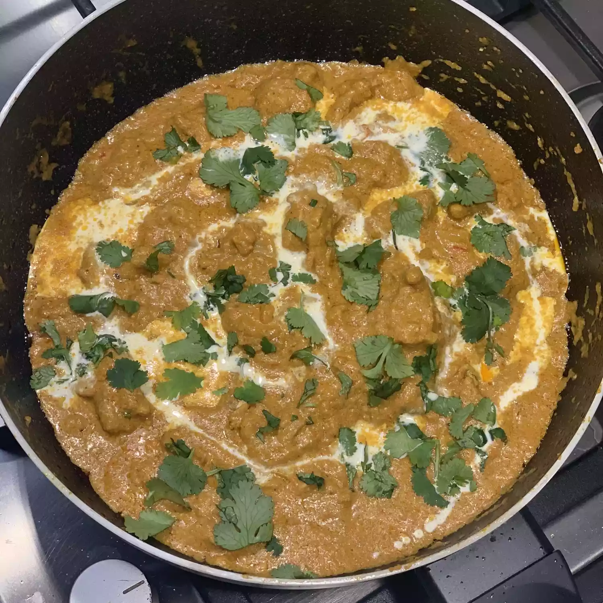

Indian Butter Chicken

Description
This butter chicken recipe is so delicious, flavorful, and easy to prepare at home. My entire family loves this curry. Serve over warm basmati rice along with some naan bread for a delicious Indian meal.
Ingredients
- 2 teaspoons garam masala
- 2 teaspoons tandoori masala powder
- 2 teaspoons Madras curry powder
- 1 teaspoon ground cumin
- 1/2 teaspoon ground cardamom
- ½ teaspoon ground cayenne pepper
- salt and ground black pepper to taste
- 1 ½ pounds boneless, skinless chicken thighs, cut into bite-size pieces
- 3 tablespoons butter, divided
- 1 yellow onion, chopped
- 4 cloves garlic, minced
- 1 tablespoon lemon juice
- 2 teaspoons chopped fresh ginger
- 1 cup tomato puree
- 1 cup half-and-half
- ¼ cup plain yogurt
- ⅓ cup cashews
- 1 bunch fresh cilantro, stems removed
Steps
- Make a spice mix by combining garam masala, tandoori masala, curry powder, cumin, cardamom, cayenne, salt, and black pepper in a small bowl; set aside
- Place chicken in a large bowl and add 1/2 of the spice mixture; turn to coat evenly.
- Melt 1 tablespoon butter in a large skillet over medium heat. Add chicken; cook and stir until lightly browned, about 10 minutes. Remove from heat.
- Melt remaining 2 tablespoons butter in a large saucepan over medium heat. Add onion; cook and stir until soft and translucent, about 5 minutes. Stir in remainder of the spice mixture, garlic, lemon juice, and ginger; cook and stir until combined, about 1 minute.
- Stir tomato puree into onion mixture and cook, stirring frequently, about 2 minutes. Pour in half-and-half and yogurt. Reduce heat to low and simmer sauce, stirring frequently, about 10 minutes. Remove from heat.
- Blend cashews in a blender until finely ground. Add sauce to the blender; puree until smooth.
- Pour blended sauce over chicken in the skillet. Simmer until thickened, 10 to 15 minutes. Garnish with cilantro.